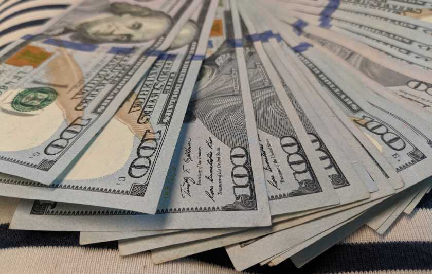

Rememeber how as a child you would think to yourself, "The adults have it all figured out. We're going to be okay?" It seems the older we get the more you realize few human beings have any idea of what they're doing and why they're doing it. If you become a financial advisor you come quickly to the understanding that very few people actually manage and organize their finances. Growing up as a youngster it wasn't even a topic in high school we touched on. Most relationships don't work out because people don't know how to give and receive love as the only designated teachers we have on the subject are time and our parents. Even the gods that are loved and worshipped by millions are arbritrarily chosen due to where you were born, who were your parents, and what time in history you existed. Some of these laws in each country are reflected in the society their respective religion has historical influence upon. Where you're allowed to go and what you're allowed to do within groups and as an individual.. All of this is the essence of politics.

An irresistable mixture of your daily life choices in collision with the inconsistent rules of the game we all play in. The more one studies the relationship of the government and the financial system we live in, capitalism, the more one realizes that all the rules of the game are connected to the most concentrated centers of wealth. A study done in 2014 by Princeton University found that in the interests of those who have incomes that fall in the lower 80% of the country, regardless of how much they support an idea, it was statistically insignificant in terms of its odds of passing through congress. The higher one climbs up the income ladder, the more influence they hold within the halls of congress and the levers of power that guide the decisions of the U.S. This impact reflects itself in society in many different obvious ways.
A quote from a video game once caught my interest. It was something along the lines of "If there is a fine for a crime, it is only of penalty to the lower classes." Our entire crime and judicial system is predicated upon whether you can "afford" justice or not. Think about this. What is the purpose of the "cash bail" system? Does money help one afford more or less innocence? Your freedom before trial is based upon your ability to access to cash which criminalizes poverty. That's right. Our entire prison system is filled with people in jail simply because they can't afford justice. We've comoditized and privatized human rights. This example is just one of the many ways democracy and capitalism are completely antithetical to one another.